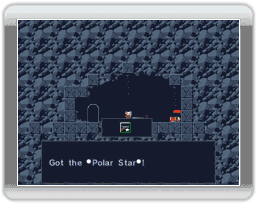
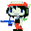
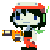
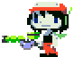
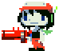

11 |
Armes |
 |
|
 Vous "emprunterez" votre première arme, l'étoile polaire, à l'armurier. Ne vous en faites pas, il ne vous en voudra pas trop.
Plus tard, vous obtiendrez d'autres armes, en les trouvant, les échangeant, ou par d'autres moyens encore. Il existe au total 10 armes différentes. Parfois, il vous suffira de filer un coup de main à quelqu'un pour qu'il vous procure une nouvelle arme, parfois il faudra être plus créatif. * Récolter les cristaux augmentera le niveau de l'arme équipée jusqu'au troisième niveau * Le niveau des armes est réduit lors de dommages prolongés infligés au joueur * Exceptionnellement, sur certaines armes, les cristaux n'auront pas d'effet Voici quelques unes des armes que vous serez amené à découvrir:

Polar Star est votre toute première arme. Initialement assez faible, elle pourra cependant gagner en niveau bien plus rapidement que la plupart des autres armes. Au niveau maximal (niveau 3) elle délivre une puissance de feu tout à fait honnête.

Fireball vous sera offerte en cadeau par un mimiga, assez tôt dans l'aventure. Contrairement à Polar Star, la boule de feu est soumise à la gravité, ses projectiles rebondissent d'une façon assez prévisible, et sont plus efficaces. Elle est utile dans les terrains vallonnés.

Trouver la Bubbline demandera l'utilisation pertinente d'une matière gélatineuse dans un endroit chaud... Les trois niveaux de cette machine présentent des avantages très distincts. Son deuxième niveau offre une certaine rapidité de tir, tandis qu'au troisième, l'arme fera office de bouclier.

Après avoir fait l'acquisition de la Machine Gun, vous frayerez bien plus aisément un chemin parmi vos ennemis. D'une fréquence de tir élevée, comme son nom l'indique, la Machine Gun est une arme brutale. Une fois celle-ci élevée au niveau 3, essayez de tirer vers le bas. |
 |
 |
 |